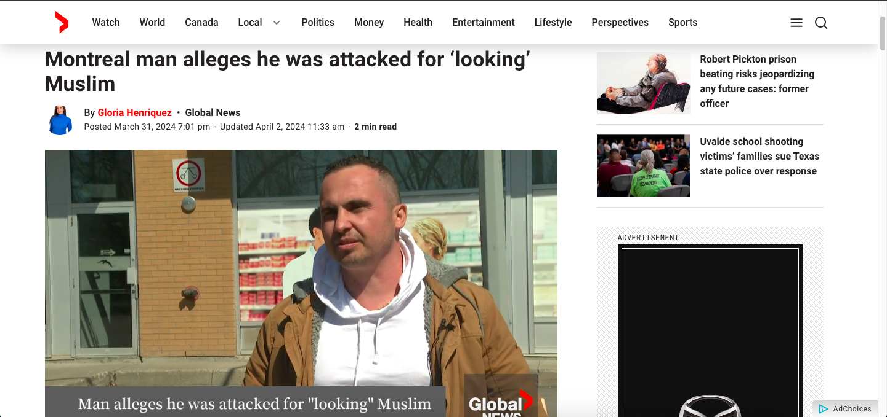

Recent Statistics of Hate Crimes in Canada
What Are the Current Findings on Hate Crimes in Canada?
According to data from Statistics Canada, there has been a noticeable increase in reported hate crimes over the past decade. This rise is attributed to several factors, including better reporting mechanisms, increased public awareness, and possibly a genuine increase in incidents fueled by global and domestic socio-political tensions. Read more below.
Specific Statistics
Here are some recent statistics found by Statistics Canada:
All statistics are found on the Statistics Canada website. Learn More Here!
Recent Cases
Some Very Recent Cases Include:
